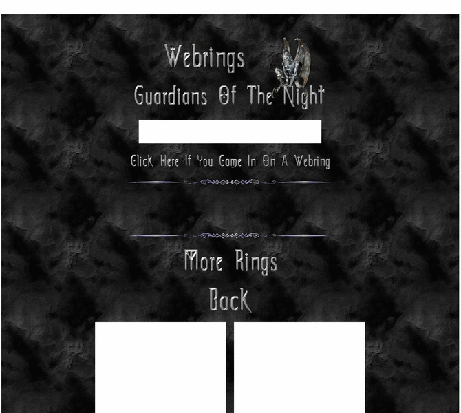

Previewing: Guardians Of The Night Previewing: Guardians Of The Night 
Use the left/right red arrow controls to navigate through this ring - Click the preview image to visit the member site.

The night...where shadows speak and darkness whispers.
Guardians Of The Night owned by:
 nytes nytes
A member of the original webring since 08/10/2012.
|
|